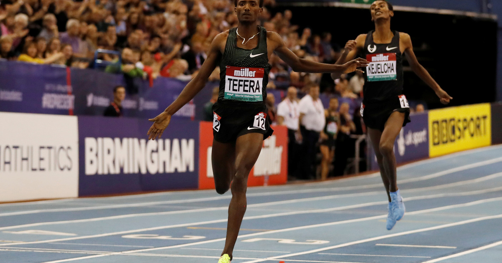

Az atlétika szépségei
Atlétika kezdete

Az atlétika futó, gyalogló, ugró és dobó vagy lökő sportágak összefoglaló elnevezése. A szó az ógörög athlon szóból származik, melynek jelentése „díjért folyó harc”.
1850-ben rendezték meg az első nyilvános atlétikai versenyt Oxfordban. 1896-ban az első újkori olimpia Athénban volt.
1983-ban megrendezték az első atlétikai világbajnokságot Helsinkiben
Milyen számok vannak?
Számok: Futószámok: Síkfutás: 100 m, 200 m, 400 m, 800 m, 1500 m, 3000 m, 5000 m, 10000 m, maraton, 4x100 m váltó, 4x400 m váltó. Gát-, akadályfutás: 100/110 m gát, 400 m gát, 3000 m akadály
Ugrószámok: távolugrás, hármasugrás, magasugrás, rúdugrás
Dobószámok: gerelyhajítás, súlylökés, diszkoszvetés, kalapácsvetés
Összetett atlétikai versenyszámok: Hétpróba, Tízpróba
Ruházat
Nos minden számhpz más ruhá a kötelező, viselet de célszerű a minnél kevesebb ruha nem azért mert kinek van jobb teste napot tartanak, hanem mivel azzal is kevesebb dolog nehezíti a feladatokat és a mozgás/mozdulatok elvégzését
Személyes tapasztalat

Az a 2 év alatt, míg ezt a sportágat végeztem nagyon sok számba volt részem belle, kostolni , mivel nem tduok mi állna jól nekem miben lennél kicsit jó. Elsőnek rövidtavá futó voltam majd, hosszútávú ami jobbnak sikeredett. A gerelyhajítást is ki probáétuk mint a turbó gerelyt junior korosztályban. Ezt szeretem meg nagyon és jól is mánt ahoz képest, voltak benne szép helyezéseim is azért míg üztem.